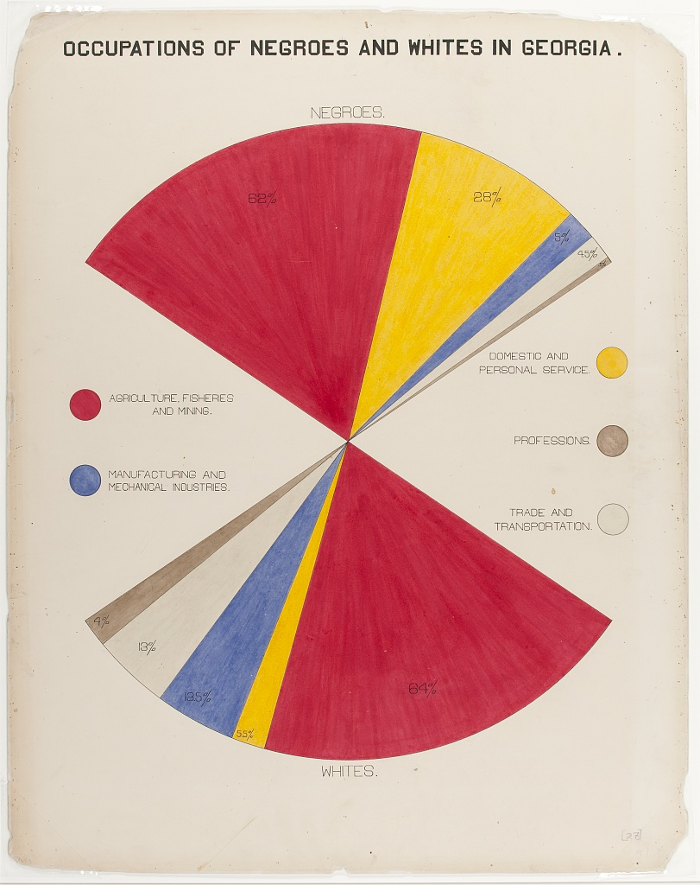
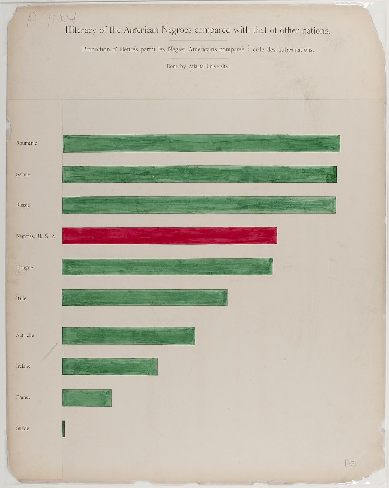
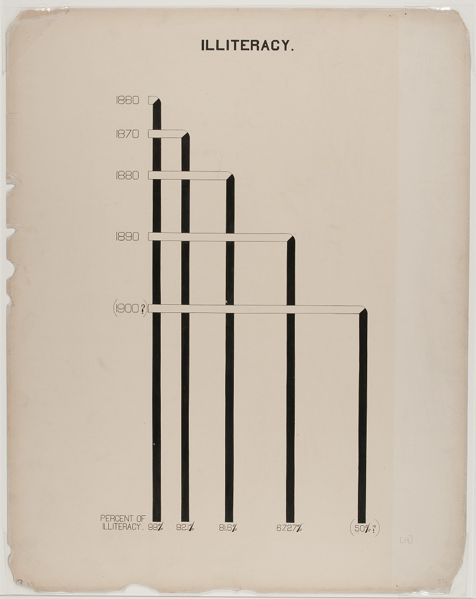
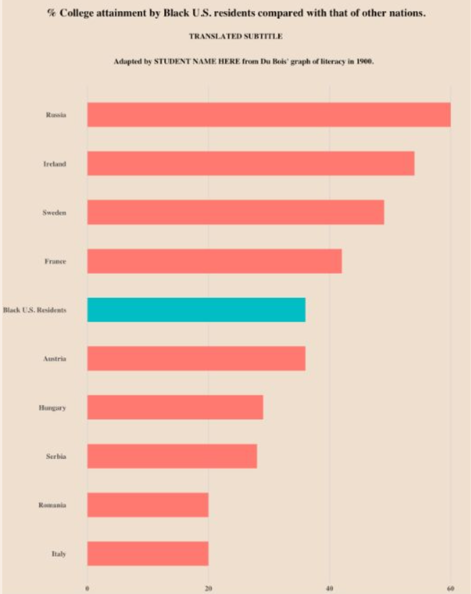

Content from Why Visualize Data: Readings
Last updated on 2026-03-02 | Edit this page
Before proceeding to the lectures and coding interactives below, take about 10 minutes to read the essay below about why data visualization is important in STEM, and what can be learned from W.E.B. Du Bois’ innovative visualizations from the 1900 Paris World Exposition. At the bottom of the reading, you can also browse some of Du Bois’ charts from the exposition.
After reading the essay, take another 10 minutes to read this article by Anthony Starks’ on the #DuBoisChallenge from Nightingale: Journal of the Data Visualization Society. The article explains how scientists, students, and data visualization enthusiasts began an annual challenge to recreate and learn from Du Bois’ visualizations using modern programming tools like Python and R.
Why Visualize Data: Creative and Visual Thinking in the Case of Du Bois
Academic and professional undertakings often present us with questions that are hard to answer with words alone. Creativity is often valuable for answering the hardest questions, including scientific ones. And visualization of concepts and data can be an important creative tool for formulating and answering questions. Because science and most professions involve collective undertakings, you will also need to communicate your ideas and analysis to others. Visualizations can again be a powerful creative tool towards this end. Cascades of mind numbing data will often lose your audience and collaborators.
Recent scholarship (Conwell and Loughren 2024; Itzigsohn and Brown 2020; Morris 2017) and social media initiatives (Starks 2022) have recentered Black sociologist W. E. B. Du Bois’s foundational contributions to social scientific and statistical methods at the turn of the 20th century. After receiving a PhD from Harvard, DuBois was among the first professors in the nation to train students in empirical methodologies. He involved his students in field work, including large scale quantitative surveys, wherein they collected and analyzed data on the Black community and race relations. Because these students were taught to think scientifically and engage in data analysis, the most advanced of the group became valuable collaborators (Morris 2017; Battle-Baptiste and Rusert 2018). Du Bois and this team used rigorous yet accessible methods, including data visualization, to empirically challenge the false claims of eugenics and scientific racism.
The Du Bois team notably used innovative data visualizations to tell data stories about Black Americans for broad audiences. By linking visualizations with a coherent narrative, data stories help audiences to better understand and remember ideas and evidence from visualizations. They chronicled the educational and economic success of Black Americans following emancipation from slavery (Battle-Baptiste and Rusert 2018). Du Bois drew heavily on infographics and artistic media (see architecture scholar Mabel O. Wilson in Battle-Baptiste and Rusert 2018). For example, the Du Bois team prepared more than 50 data visualization posters for an Exhibit featured at the 1900 Paris Exposition world’s fair. The Du Bois visualizations won the Exposition’s Gold Medal for their quality. The posters are now preserved in the Library of Congress.
Just as the Du Bois team used data stories to chronicle Black success after slavery, we can use Du Bois’ own story to learn data visualization methods for a range of scientific applications. Below, you can browse a subset of the Du Bois posters from the 1900 Paris Exposition. Du Bois uses variations of all of the major chart types still in use today: 1) bar charts, 2) line charts, 3) pie charts, and 4) statistical maps. Together, the posters presented a unified narrative of Black empowerment. The poster series prefigured subsequent research findings regarding the importance of visualization and storytelling in STEM education (Friendly and Wainer 2021; Hill and Grinnell 2014).
With the posters, Du Bois and his collaborators made some of the other earliest known deployments of statistical methods in social science. For example, the posters employ categorical data analysis and visualization. Du Bois’ innovative techniques also include clustered bar charts to present partial tables that control for confounding factors. Du Bois used this method to disprove racist myths about Black family structure by showing higher marriage rates among Blacks than among Germans after controlling for age. Du Bois employed this partial table technique sixty years before it became state of the art (Treiman 2014). Du Bois also produced some of the earliest cartographical visualizations of geosocial data. Triangulation of qualitative and quantitative data
Du Bois’ collaborators included women, such as social worker Jane Addams and sociologist Isabel Eaton. The two women contributed to the expansion of survey research and advancement of statistical methods around the turn of the 20th century (Morris 2017; Williams and MacLean 2015).
Du Bois insisted that science be built on careful, empirical research but must go further to garner notice beyond narrow circles of academics. As noted above, Du Bois and his Atlanta University team thus produced modern graphs, charts, maps, photographs and other items that appeared to sparkle for the 1900 Paris Exposition (Battle-Baptiste and Rusert 2018). As Morris has documented (2017), the intent was to convey weighty social scientific ideas in a fashion far more attractive than dispassionate arguments and dense statistical tables.
References
Battle-Baptiste, W., & Rusert, B. (Eds.). (2018). W. E. B. Du Bois’s data portraits: Visualizing Black America. Chronicle Books.
Conwell, J. A., & Loughran, K. (2024). Quantitative inquiry in the early sociology of W. E. B. Du Bois. Du Bois Review: Social Science Research on Race, 21(2), 368-390.
Du Bois Visualization Style Guide (https://github.com/ajstarks/dubois-data-portraits/blob/master/style/dubois-style.pdf)
Friendly, M., & Wainer, H. (2021). A history of data visualization and graphic communication (Vol. 56). Cambridge: Harvard University Press.
Hill, S., & Grinnell, C. (2014, October). Using digital storytelling with infographics in STEM professional writing pedagogy. In 2014 IEEE International Professional Communication Conference (IPCC) (pp. 1-7). IEEE.
Itzigsohn, J., & Brown, K. L. (2020). The sociology of W. E. B. Du Bois: Racialized modernity and the global color line. NYU Press.
Morris, A. (2017). The scholar denied: W. E. B. Du Bois and the birth of modern sociology. University of California Press.
Starks, A. (2022). The #DuBois Challenge. Nightingale: Journal of the Data Visualization Society.
Treiman, D. J. (2014). Quantitative data analysis: Doing social research to test ideas. John Wiley & Sons.
Williams, J. E., & MacLean, V. M. (2015). Settlement sociology in the progressive years: Faith, science, and reform (Vol. 75). Brill.
A Sample of the Du Bois Visualizations from the Paris Exposition
Note that the plate numbers referenced below are from [W. E. B. Du Bois’s Data Portraits: Visualizing Black America] (https://papress.com/products/w-e-b-du-boiss-data-portraits-visualizing-black-america)
Figure 1: Time series graph

One of the rare line charts in the collection, the comparative population growth of white and Black Americans from 1790-1890, is annotated with relevant events like “Suppression of Slave Trade”, Immigration” and “Emancipation”.
Figure 2: Time Series Percent Area Graph

With the green waters of Freedom plunging down a waterfall set on the dark base of slavery, “Proportion of Freeman and Slaves Among American Negroes” shows number of enslaved and free from 1790 to 1870.
Figure 3: Percentage Bar Graph of Dichotomous Variable Status(literacy) By Select Categories (National / Racial Community)

Comparing the state of Black Americans with the larger world, “Illiteracy of American Negroes compared with that of other nations” shows Black American’s illiteracy in red, in the middle of a sea of green, higher than countries like France, but better than others like Russia.
Figure 4: Categorical Map of Population Location With Population Size Legend

A choropleth outlining the population of Black Americans, by state. Note the concentration in the South, with Georgia leading (750,000 or more).
Figure 5: Fan Chart for Categorical Percentage Distributions in Two Comparison Groups

The fan chart compares Black and white population’s occupations, using color and area to faciliate comparisons.
Figure 6: Cartographical Visualization of Population Location and Movement

“The Georgia Negro, A Social Study” shows the transatlantic slave trade, with routes from Europe, Africa, the Americas and the Caribbean, highlighting Georgia. This visual contains Du Bois’ famous assertion: “The problem of the 20th century is the problem of the color line”
Figure 7: Multivariate stacked bar graph by continuous covariate brackets, with photographic and other data element details

The horizontal stacked bar charts show how various economic groups spend their income among these categories: Rent, Food, Clothes, Taxes, and other expenses and giving. This visual is distinct in that it includes photographs along with the chart.
Figure 8: Partial Table Bar Graph – i.e. Bivariate Categorical Relationship (Marriage Status by Racial / National Group) Broken Control Variable (Age)

The “Conjugal Condition” visual compares three groups (single, married, widowed and divorced), divided by age: (15-40, 40-80, and over 80) within two populations: Black Americans and the country of Germany. The data is shown clearly using six proportional bar graphs in the red, yellow and green color scheme.
Figure 9: Bar/Spiral chart Uses color and contrasting lengths to highlight quantitative demographic differences.

Figure 10: Bar Chart
“Acres of Land Owned by Negroes in Georgia” is a conventional bar chart with a twist. The chart shows the increase of land owned between 1874(338,769 acres) and 1899 (1,023,741), with the red shape of the data echoing the map of Georgia.


Content from Why Visualize Data: Lecture
Last updated on 2026-03-02 | Edit this page
BELOW IS SAMPLE FORMATTING FROM CARPENTRIES SITES
Overview
Questions
- How do you write a lesson using Markdown and sandpaper?
Objectives
- Explain how to use markdown with The Carpentries Workbench
- Demonstrate how to include pieces of code, figures, and nested challenge blocks
Introduction
This is a lesson created via The Carpentries Workbench. It is written in Pandoc-flavored Markdown for static files and R Markdown for dynamic files that can render code into output. Please refer to the Introduction to The Carpentries Workbench for full documentation.
What you need to know is that there are three sections required for a valid Carpentries lesson:
-
questionsare displayed at the beginning of the episode to prime the learner for the content. -
objectivesare the learning objectives for an episode displayed with the questions. -
keypointsare displayed at the end of the episode to reinforce the objectives.
Challenge 1: Can you do it?
What is the output of this command?
R
paste("This", "new", "lesson", "looks", "good")
OUTPUT
[1] "This new lesson looks good"Challenge 2: how do you nest solutions within challenge blocks?
You can add a line with at least three colons and a
solution tag.
Figures
You can use standard markdown for static figures with the following syntax:
{alt='alt text for accessibility purposes'}
Callout sections can highlight information.
They are sometimes used to emphasise particularly important points but are also used in some lessons to present “asides”: content that is not central to the narrative of the lesson, e.g. by providing the answer to a commonly-asked question.
Math
One of our episodes contains \(\LaTeX\) equations when describing how to create dynamic reports with {knitr}, so we now use mathjax to describe this:
$\alpha = \dfrac{1}{(1 - \beta)^2}$ becomes: \(\alpha = \dfrac{1}{(1 - \beta)^2}\)
Cool, right?
- Use
.mdfiles for episodes when you want static content - Use
.Rmdfiles for episodes when you need to generate output - Run
sandpaper::check_lesson()to identify any issues with your lesson - Run
sandpaper::build_lesson()to preview your lesson locally
Content from Reading and Interpreting STEM Charts
Last updated on 2026-02-28 | Edit this page
Overview
Questions
- How can data visualization and creativity help answer important scientific questions?
- Why did data visualization become predominant in the social sciences earlier than for physical and natural sciences?
- How did Du Bubois use data visualization to challenge false biological theories of racial inequality?
- How did team science help Du Bois’ team to create impactful visualizations for the 1900 Paris exposition?
Objectives
Understand which of the four chart types used by Du Bois and contemporary scientists are best suited for different types of data and multivariate analyses.
Interpret how Du Bois used one of these chart types for an analysis that contradicted false, biologically-based theories of racial inequality.
Identify best practices for making charts accessible and engaging for broad audiences that are either present or missing from a Du Bois chart.
Ground your ability to to read and understand STEM charts by hand drawing a chart.
In this section we will explore charts developed for the 1900 Paris Exposition by Du Bois and his collaborators, as examples of effective analysis and storytelling.
We will examine types of data and the various chart types in some detail.
Video overview
Chart Types
We use different types of graphs based on the types of data and relationships we are analyzing. Du Bois used variants of most of the major graph types that are still used today: (pie, bar, line charts, and statistical maps).
Chart Types: Pie Charts

Pie graphs illustrate the percentages of categories (like occupations) within a larger unit (like a population) where all the percentages add up to 100%.
This analyzes a one-dimensional distribution across one categorical variable.
Chart Types: Bar Charts

Bar graphs compare frequencies or percentages of one category (like literacy) among other categories (like race or nation).
This helps us analyze two-dimensional relationships, typically between two categorical variables.
Chart Types: Line Charts

Line graphs plot frequencies or percentages of a continuous interval-ratio variable (like total population) on a y-axis among categories represented by different lines (like racial groups) over a third category of another ordinal or interval ratio variable on an x-axis (like year).
This analyzes three dimensional relationships between three different variables, including interval ratio variables.
Time series line graphs, with time on the x-axis, are the most common type of line graph.
Design Aesthetics and Accessibility
While Du Bois sought to make his visualizations accessible to broad audiences, advances in universal design practices do even more to make visualizations accessible to people with diverse visual, cognitive, auditory, or motor strengths and needs. Practices include:
Keeping visuals as simple as possible, presenting only information necessary for analysis.
Color-blind friendly use of color and contrast, avoiding over-reliance on color
Alternative text (alt text) that screen readers can use to provide an audio description of images.
Descriptive titles and labels
Offering both visual and non-visual formats
Including narrative text with context and summaries
Exploring Charts: a worked example
Illiteracy of American Negroes compared with that of other nations: Paris Exposition, 1900
How does Black illiteracy (the red bar) compare with other countries
Disucssion
How does Black illiteracy compare to literacy in other countries on the chart?
What is similar about the countries with higher illiteracy than Black illiteracy in the US?
Design Aesthetics and Accessibility
What makes this graph easy or difficult to understand?
How is the graph aesthetically appealing? How could could it be more appealing?
How does this graph take its audience into consideration?
What tools would you need to create this graph by hand?
This visual, a conventional bar graph, uses spot color to highlight the data for Black Americans compared to other countries, showing the illiteracy rate to be at the midpoint compared to other nations.
The chart portion is a large percentage of the canvas, simply showing the message.
Note the bilingual labels and titles (a nod to the venue and audience).
Context and Data Story
Du Bois presented his graph for illiteracy among Black Americans and other nations (left), together with the graph of Black illiteracy in Georgia from 1865 to 1900. What data story do these 2 graphs tell together?

Example: Re-Create with Modern Data and Accessible Design

Activity: Hand draw a recreation of Du Bois’ graph using the data below on college attainment today.
Building on the graph to the left, what accessible design improvements can you make?
Data:
Country College
Russia 60
Ireland 54
Sweden 49
France 42
Black U.S.
Residents 36
Austria 36
Hungary 29
Serbia 28
Romania 20
Italy 20- Even simple chart types can convey interesting meaning. Color man be used to emphasize points
Content from R coding interactives
Last updated on 2026-02-28 | Edit this page
These coding interactives use Jupyter Notebooks that you can open and use with any web browser without any software installations on your own computer. This is ideal for beginners with R who do not yet want to learn how to use the R studio interface on their own computers.
If you plan to use R in the future, however, we recommend that you instead try the activities from our R STEM Data Visualization with Du Bois lesson site. That site has activities with Du Boisian examples for learning to use R studio for data visualization on your own computer.
Interactive 1: Recreate a Du Bois Bar Chart of Literacy
Complete the interactive here.
This video tutorial will walk you through the interactive.
Interactive 2: Adapt a Biodiversity and Redlining Bar Chart
Complete the interactive here.
This video tutorial will walk you through the interactive.
Content from Python interactives
Last updated on 2026-03-02 | Edit this page
These coding interactives use Jupyter Notebooks that you can open and use with any web browser without any software installations on your own computer. This is ideal for beginners with Python who do not yet want to learn how to use a Python editor and graphical user interface (GUI) like Jupyter Lab or Sublime on their own computer.
If you plan to use Python in the future, however, we recommend that you instead try the activities from our Python STEM Data Visualization with Du Bois lesson site. That site has activities with Du Boisian examples for learning to use Jupyter Lab for data visualization on your own computer.
Interactive 1: Du Bois Bar Chart of Literacy
Complete the interactive.
This video tutorial will walk you through the interactive.
Interactive 2: Biodiversity and Redlining Bar Chart
Complete the interactive.
Interactive 3: Time Series Line Chart
Complete the interactive.
Interactive 4: Time-series area chart of time-value of money
Complete the interactive.
Interactive 5: Statistical map of US Black population
Complete the interactive.
Content from Learning Evaluation
Last updated on 2026-03-02 | Edit this page
We will publish learning evaluation materials here including a SCORM file with a CANVAS quiz. The CANVAS quiz will contain links to answer keys for coding interactives that will be accessible only to instructors.
We should figure out a system for providing answer keys to instructors for coding interactives or another learning evaluatin activity that doesn’t use Canvas.
Content from Our Team
Last updated on 2026-02-28 | Edit this page
Introduction
THIS IS WHERE WE WILL WRITE OUR TEAM INFO.